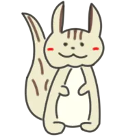
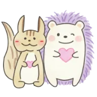

🌲 かけざん めいろたんけん

こたえの すうじを
1けたずつ
えらんで、となりへ すすもう！
1ステージ3もん × 5ステージ（ぜんぶで15もん）のタイムアタックだよ！
1の段
1×1 〜 1×9
2の段
2×1 〜 2×9
3の段
3×1 〜 3×9
4の段
4×1 〜 4×9
5の段
5×1 〜 5×9
6の段
6×1 〜 6×9
7の段
7×1 〜 7×9
8の段
8×1 〜 8×9
9の段
9×1 〜 9×9
🌟 ミックス（1〜9の段ぜんぶ）
🏠 ホームにもどる
ステージ 1/5
0.0
秒
① 2×3
② 2×7
③ 2×9
2 × 7 =
ひかっている となりのマスから こたえを えらぼう！
✨ ゴール！ ✨
つぎの ステージへ すすむよ！
◀ だんを えらびなおす
のこり 15もん
🎉 15もん ぜんぶクリア！ 🎉
2の段

めいろを ゴールまで かけぬけたね！
すごい けいさんりょくだよ！
クリアタイム
0.0
秒
ミス 0かい
🔄 もういちど あそぶ
📋 ほかの段を えらぶ
🏠 ホームへ